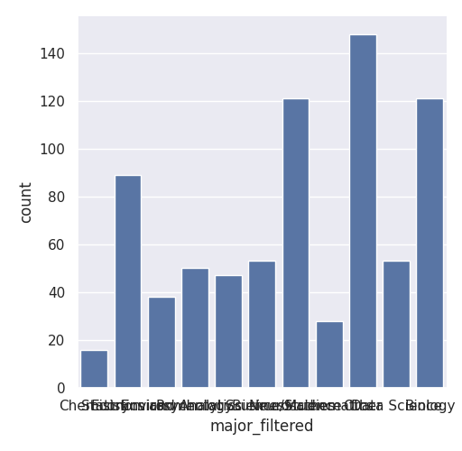
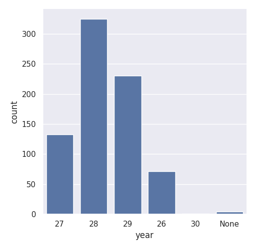
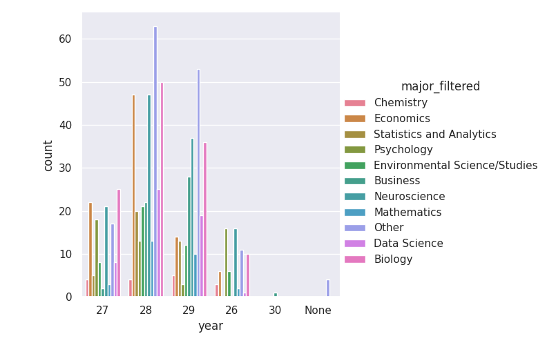

The course should include more real-world examples to make programming more engaging for students from different majors.
I analyzed survey data from COMP110 students to understand the distribution of majors and class years. The data shows that students come from a wide variety of academic backgrounds, with many non-CS majors represented.



The diversity of majors suggests that incorporating more real-world examples could improve engagement, especially for students from non-technical backgrounds. While the data does not directly measure engagement, this change could make the course more relevant and accessible.